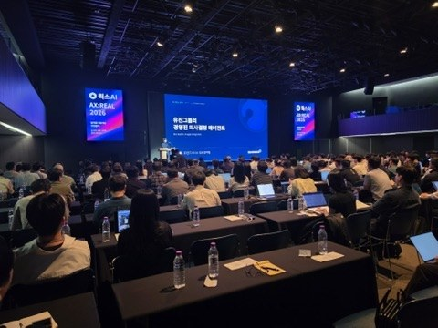
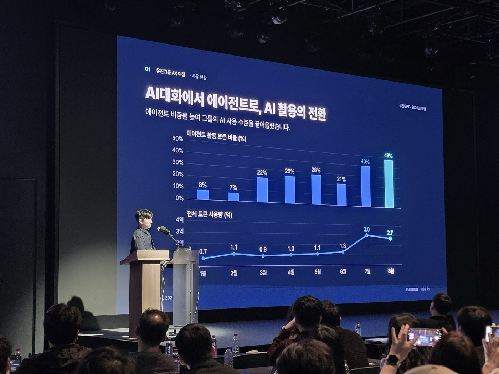

Backend Engineer · 6년차
"느리다"와 "맞지 않는다"를 측정과 구조 설계로 해결해 온 백엔드 엔지니어입니다. 일 1,000건+ 주문 커머스, 4개국 글로벌 결제, 임직원 500명 인사 시스템을 개발·운영하며 응답 시간 94%↓, 30만 건 이관 불일치 0건을 달성했고, 현재는 15개 계열사 900명이 쓰는 그룹 AI 서비스의 인증·연동 표준을 설계하고 있습니다.
커리어 방향 — 대규모 트래픽 이커머스에서 트랜잭션·성능을 익힌 뒤, 엔터프라이즈 보안·인증 환경을 거쳐 AI와 사내 시스템을 안전하게 잇는 연동 영역으로 확장해 왔습니다.
| 역량 | 근거 |
|---|---|
| 성능 최적화 | 병목을 지표로 먼저 특정(AWR·슬로우 쿼리·APM) 후 구조 변경. 응답 18초→1초, 조회 10초→1초, 검색 60%↑ |
| 정합성 설계 | 복합 결제·부분 환불 시나리오 40건 검증, 30만 건 이관 건수·금액 대사 불일치 0건 |
| 인증·보안 연동 | OAuth 2.0/JWT 표준화, 내부망 포트 개방 없이 AI 연동(API GW→Lambda→DMZ), 보안 심의 1회 통과 |
| AI 서비스 개발 | MCP 오케스트레이션 5관점 투자심의 에이전트(컨퍼런스 발표), 전사 에이전트 16건·도구 10종, 딥리서치 파이프라인 |
| 리딩·확산 | PL 2회(5인), 계열사 교육 5회(150명), 멘토링, AI 석사 과정 병행(4.19/4.5) |
| 대안 | 장점 | 한계 | 결론 |
|---|---|---|---|
| 서버 스펙 증설 | 코드 변경 없음 | 병목이 하드파싱·반복 조회라 효과 제한 | 제외 |
| 인덱스 보완만 | 위험 낮음 | 동적 SQL 파싱 비용 잔존 | 1단계 |
| 정적 SQL + 서버 캐시 + 로그 비동기 | 파싱·조회·I/O 동시 제거 | 캐시 무효화 규칙 필요 | 최종 채택 |
측정 — p95 응답은 Chrome DevTools Network 기준, 하드파싱 횟수는 Oracle AWR 리포트로 개선 전후 비교
· 트레이드오프 서버 캐시 갱신 지연 최대 30초는 인사 데이터 특성상 현업 합의 후 수용
| 대안 | 장점 | 한계 | 결론 |
|---|---|---|---|
| 내부망 포트 직접 개방 | 구현 단순 | 보안 심의 불가 | 제외 |
| VPN·전용선 | 통제 용이 | SaaS 미지원, 구축 길음 | 제외 |
| API GW → Lambda → NAT → DMZ + MCP | 내부망 비노출, 호출 단위 인가·감사 | 홉 증가 지연 | 최종 채택 |
측정 — p95 응답은 CloudWatch 2주 집계, 사용자·호출량은 게이트웨이 액세스 로그 월 집계
· 트레이드오프 경로 홉 증가로 호출당 약 80ms 추가, 응답 캐시로 상쇄
| 대안 | 장점 | 한계 | 결론 |
|---|---|---|---|
| 쿼리·인덱스 튜닝만 | 위험 낮음 | 집계 부하 잔존 | 부분 적용 |
| 10분 주기 사전 집계 | 조회 부하 제거 | 최대 10분 지연 | 최종 채택 |
| Redis 실시간 갱신 | 지연 없음 | 신규 인프라·비용 | 제외 |
측정 — 슬로우 쿼리 로그·APM 기준 피크(20~23시) 2주 일평균 비교, 검색은 상위 검색어 100개 평균 응답
주력 실무 3년+ · 운영·장애 대응 경험 활용 프로젝트 경험

